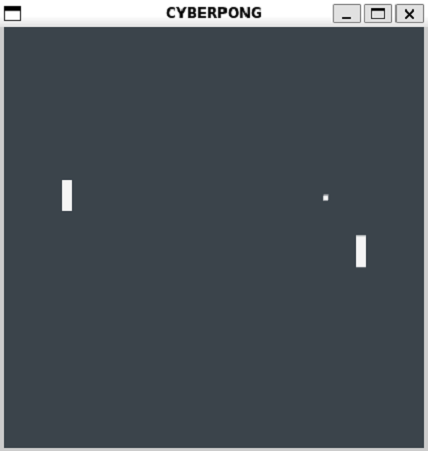

O jogo Pong remete à modalidade olímpica de Ping Pong e é um clássico de implementação de jogos. Dois jogadores, o jogador à esquerda e o jogador à direita, competem para marcar a maior quantidade de pontos.
Figura 1 - Interface gráfica do jogo Pong.
Os arquivos disponibilizados são:
- bot.py – exemplo de implementação do agente virtual à esquerda e à direita
- envpong.py – ambiente de simulação do jogo Pong
- pongPlayGUI.py – script de execução do jogo Pong com gráficos
- pongPlayNOGUI.py – script de execução do jogo Pong sem gráficos
Para o jogo Pong o agente virtual é separado em dois, um à esquerda e um à direita, para facilitar a implementação dos competidores. Os agentes seguem o paradigma Pensar-Agir-Observar para interação com o ambiente. Na implementação de exemplo à direita o jogador realiza movimentações aleatórias.
Exemplo de Código Python:
"Random bot"
class BotRight:
def __init__(self, env):
self.env = env
"This bot doesn't require an initial observation"
self.obs = None
def act(self):
action = random.choice([PongLogic.PaddleMove.DOWN, PongLogic.PaddleMove.STILL, PongLogic.PaddleMove.UP])
return action
def observe(self, obs):
self.obs = obs
Na implementação de exemplo do jogador à esquerda o agente mantém memória da última observação realizada e a utiliza para movimentar a raquete de maneira a rastrear a posição vertical da bola.
"Random bot"
class BotRight:
def __init__(self, env):
self.env = env
"This bot doesn't require an initial observation"
self.obs = None
def act(self):
action = random.choice([PongLogic.PaddleMove.DOWN, PongLogic.PaddleMove.STILL, PongLogic.PaddleMove.UP])
return action
def observe(self, obs):
self.obs = obs
Os scripts pongPlayGUI e pongPlayNOGUI são disponibilizados para que os competidores possam testar suas implementações. Não envie estes scripts alterados pois eles não serão utilizados na competição. Respeite a interface de implementação dos bots conforme o construtor, métodos de ação e observação apresentados. A sua implementação do módulo bot.py deve conter o jogador à esquerda e o jogador à direita com os nomes BotRight e BotLeft para que os agentes sejam utilizados contra os agentes de outros competidores.
from envpong import PongEnv
from bot import BotRight, BotLeft
import os
def runLoop(env):
random_bot = BotRight(env)
tracker_bot = BotLeft(env)
# simulate for arbitrary 1000 steps (about 33 seconds)
for i in range(1000):
actionp1 = tracker_bot.act()
actionp2 = random_bot.act()
obs, reward, done, truncated, info = env.step(actionp1, actionp2)
tracker_bot.observe(obs)
random_bot.observe(obs)
def main():
env = PongEnv(debugPrint=True)
runLoop(env)
import arcade
from envpong import PongGUIEnv
from bot import BotRight, BotLeft
import os
import time
import threading
def runLoop(env):
random_bot = BotRight(env)
tracker_bot = BotLeft(env)
# simulate for arbitrary 1000 steps (about 33 seconds)
for i in range(1000):
actionp1 = tracker_bot.act()
actionp2 = random_bot.act()
obs, reward, done, truncated, info = env.step(actionp1, actionp2)
tracker_bot.observe(obs)
random_bot.observe(obs)
# this should be somewhat synced to arcade's event loop
time.sleep(env.game.dt)
def main():
env = PongGUIEnv()
# Create separate thread for logic updates
threading.Thread(target=runLoop, args=(env,)).start()
# Arcade thread for GUI updates
arcade.run()
O ambiente do jogo Pong possui um espaço de ação com três valores discretos (-1, 0, 1), equivalentes a movimentar a raquete para baixo, manter a raquete parada, e movimentar a raquete para cima.
# there are 3 possible actions: PongLogic.PaddleMove.{DOWN,STILL,UP} (-1, 0, 1)
self.action_space = Discrete(3, start=-1)
O ambiente do jogo Pong possui um espaço de observação com 14 valores, sendo 12 valores contínuos, referentes a posições e velocidades da raquete 1, da raquete 2, e da bola, e 2 valores discretos, referentes à última ação do jogador 1 e do jogador 2.
# matches getInputs()
# all positions can be converted to discrete by multiplying by their respective window height/width
self.observation_space = Tuple((
Box(0, 1), # 0 paddle 1 x position
Box(0, 1), # 1 paddle 1 y position
Box(0, 1), # 2 paddle 1 x velocity
Box(0, 1), # 3 paddle 1 y velocity
Box(0, 1), # 4 paddle 2 x position
Box(0, 1), # 5 paddle 2 y position
Box(0, 1), # 6 paddle 2 x velocity
Box(0, 1), # 7 paddle 2 y velocity
Box(0, 1), # 8 ball x position
Box(0, 1), # 9 ball y position
Box(0, 1), # 10 ball x velocity
Box(0, 1), # 11 ball y velocity
Discrete(3, start=-1), # 12 player 1 action
Discrete(3, start=-1) # 13 player 2 action
))
O espaço de observação é obtido pela função getInputs. Esta função realiza a leitura do último estado do jogo, converte posições discretas para valores contínuos e combina os valores numa lista.
# Serialize a given state into relevant inputs
def getInputs(self, state):
inputs = []
inputs += [state.paddle1Position[0]/self.game.windowWidth]
inputs += [state.paddle1Position[1]/self.game.windowHeight]
inputs += [state.paddle1Velocity[0]/(self.game.ballVelocityMag*100)]
inputs += [state.paddle1Velocity[1]/(self.game.ballVelocityMag*100)]
inputs += [state.paddle2Position[0]/self.game.windowWidth]
inputs += [state.paddle2Position[1]/self.game.windowHeight]
inputs += [state.paddle2Velocity[0]/(self.game.ballVelocityMag*100)]
inputs += [state.paddle2Velocity[1]/(self.game.ballVelocityMag*100)]
inputs += [state.ballPosition[0]/self.game.windowWidth]
inputs += [state.ballPosition[1]/self.game.windowHeight]
inputs += [state.ballVelocity[0]/(self.game.ballVelocityMag*100)]
inputs += [state.ballVelocity[1]/(self.game.ballVelocityMag*100)]
inputs += [state.player1action]
inputs += [state.player2action]
return inputs